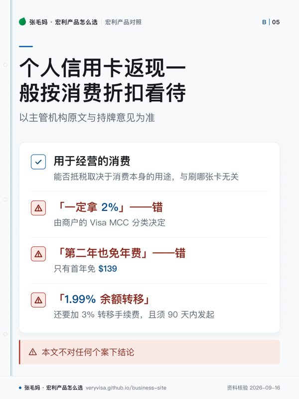

- 解决什么问题牙医、药房、理疗、健身这类健康消费的加速返现
- 门槛Visa Infinite 收入要求个人 $60,000 或家庭 $100,000；Platinum 无年费
- 费用与封顶Infinite 年费 $139 首年免、附卡 $50；两个加速类别各只对每年前 $25,000 消费适用（Platinum 为 $15,000）
- 税务后果个人卡返现一般按消费折扣看待；公司卡或报销消费的归属与记账问会计师
知识卡
不看正文也能拿到这一页的核心规则：先看导读，再看图。点图放大，左右翻页。
- 先看先看加速类别的适用额度，再看年费，不要只看返现数字。
- 易漏哪笔消费算「健康类」等加速类别，按 Visa 对商户的分类并由 Manulife Bank 认定。
- 下一步去按产品，带着消费类别、年费与利率问题找持牌专业人士。

- 先看先分清税务后果和常见误区，再看哪些条件会改变结果。
- 易漏若是公司卡或报销消费，返现归属与记账方式问会计师。
- 下一步去按税务问题，再带个案问题找持牌专业人士。
这两张卡要不要办，看的不是「返现几个点」，而是你每年在牙医、药房、理疗、健身上花多少钱， 以及这些消费会不会撞上加速类别的年度封顶。下面把两张卡的条款并排列出来。
和转账、电汇一起看「钱怎么进来、怎么花出去」，去对照页； 公司卡返现和报销消费的处理，去看借来的钱，利息能不能抵税。
一句话
Manulife 现行两张信用卡是「健康消费专用卡」：牙医、药房、理疗、健身这类消费返现高，超市、加油、账单这类日常消费不如五大行主力返现卡；Infinite 的 65 岁以上旅行医疗天数是一个可比出来的亮点。
事实清单
- Visa Infinite 返现：健康／医疗／wellness 类 2%，旅行／餐饮／娱乐类 1.5%，其他消费 1%。✅源
- Visa Infinite 的两个加速类别各自只对每年前 $25,000 消费适用，超出部分回落到基础返现。✅源
- Visa Infinite 年费 $139、首年免，每张附卡 $50。✅源
- Visa Infinite 收入门槛：个人 $60,000 或家庭 $100,000。✅源
- Visa Platinum 返现：健康类 1.5%、旅行／餐饮／娱乐类 1%、其他 0.5%，两个加速类别各自每年前 $15,000 消费适用。✅源
- Visa Platinum 年费 $0。✅源
- 两张卡购物利率 21.99%、预借现金利率 22.99%。✅源
- 哪笔消费算「健康类」等加速类别，按 Visa 对商户的分类并由 Manulife Bank 认定。✅源
- Visa Infinite 旅行紧急医疗：65 岁以下 20 天，65 岁及以上 7 天，其余条件以保险证书为准。✅源
- Visa Infinite 迎新：开户起至第 3 期账单，前 $2,000 净合资格消费合计 10% 奖励，另加首年免年费（2026-09-15 状态）。✅源
- 两张卡余额转移 1.99% 维持 6 个月，须开户 90 天内发起，另收 3% 转移手续费。✅源
- 截至 2026-09-15，官网写已有 Manulife Bank 客户可登录申请，全新客户显示「即将开放」。✅源
与同类产品比较
口径：各行官方产品页在核查日（见 last_verified）的状态；返现比例与迎新随时变，发布当天复核。
| 卡 | 年费 | 高返现类别 | 基础返现 | 类别上限 | 65 岁以上旅行医疗 |
|---|---|---|---|---|---|
| Manulife Visa Infinite | $139，首年免 ✅源 | 健康 2%；旅行餐饮娱乐 1.5% ✅源 | 1% ✅源 | 每类每年 $25,000 ✅源 | 7 天 ✅源 |
| TD Cash Back Visa Infinite | $139 ✅源 | 超市、加油／EV、交通、定期账单、流媒体 3% ✅源 | 1% ✅源 | 每类每年 $15,000 ✅源 | 该卡未比；TD First Class Travel VI 为 4 天 ✅源 |
| CIBC Dividend Visa Infinite | $120 ✅源 | 超市、加油／EV 4%；交通、餐饮、定期账单 2% ✅源 | 1% ✅源 | — | 该卡未比；CIBC Aventura VI 为 3 天 ✅源 |
| Scotia Momentum Visa Infinite | $120 ✅源 | 超市、定期账单 4%；加油、交通、网约车、外卖 2% ✅源 | 1% ✅源 | 4% 与 2% 各自每年 $25,000 ✅源 | 该卡未比；Scotia Passport VI 为 3 天 ✅源 |
| BMO CashBack World Elite | $139 ✅源 | 超市 5%；交通 4%；加油／EV 3%；定期账单 2% ✅源 | 1% ✅源 | — | — |
| RBC Cash Back Preferred World Elite | $99（2026-10-01 起 $120）✅源 | 现行无特定类别；10 月起多类日常 3% ✅源 | 前 $25,000 为 1.5%，之后 1% ✅源 | 见左 ✅源 | 该卡未比；RBC Avion VI 为 3 天 ✅源 |
长期年费要看「净年费」：五大行高端支票套餐会返还一张卡的年费——RBC VIP 最高 $120 ✅源、CIBC Smart Tier 3 最高 $139 ✅源、Scotia Ultimate 最高 $150 ✅源、BMO Premium 每年返还 CashBack World Elite 的 $139 年费 ✅源、TD All-Inclusive 最高 $139。✅源
税务后果
- 个人信用卡返现一般按消费折扣看待，本轮原料没有针对 Manulife 卡的税务结论；若是公司卡或报销消费，返现归属与记账方式问会计师。
- 用于经营的消费，能否抵税取决于消费本身的用途，与刷哪张卡无关。
- 以主管机构原文与持牌意见为准，本文不对任何个案下结论。
常见误区
- 「宏利卡超市 3%」「Platinum 超市 2%」——这是旧版 ManulifeMONEY+ 条款，现行官方结构是健康类加速。✅源
- 「所有牙医、理疗、健身都一定拿 2%」——错，由商户的 Visa MCC 分类决定。✅源
- 「Infinite 第二年也免年费」——错，只有首年免 $139。✅源
- 「1.99% 余额转移就是全部成本」——错，还要加 3% 转移手续费，且须 90 天内发起。✅源
- 「宏利是保险公司，所以卡上的旅行保险一定最好」——过度概括，只能逐项比天数与条件，65 岁以上还要看既往病症与稳定期条款。✅源
- 「任何人现在都能在线申请」——截至 2026-09-11，全新客户仍显示即将开放。✅源
- 两张卡都不是免外币交易费卡，外币消费多的人不该拿它当主卡。✅源
事实来源
该问经纪的问题（抄下来直接问）
- 我家一年在牙医、眼镜、理疗、按摩、健身上大概花多少？按这个数，Infinite 扣掉年费后比我现在的卡多拿还是少拿？
- 我 65 岁以后常出境短途旅行，这张卡的旅行医疗和我单独买的旅行保险怎么搭配，既往病症条款会不会卡住理赔？
- 我现在没有 Manulife Bank 账户，要先开哪个账户才能申请这张卡？
- 这一页的数字核对日期是哪天？到我签字那天，哪几个会变？
- 同样的需求，除了这个产品还有哪些选择，为什么你不建议那几个？
去论坛讨论
音视频与笔记本
- nb-manulife-bank
本页是公开资料的整理与对照，不是官方文件，也不构成针对你个人情况的保险、投资或税务建议。产品条款、利率与费用以机构当期官方文件为准；税务处理以主管机构原文与持牌专业意见为准。数字会变，看到本页请对一眼「核对日期」。